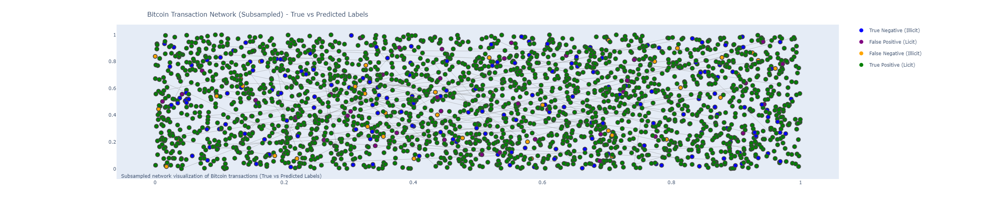
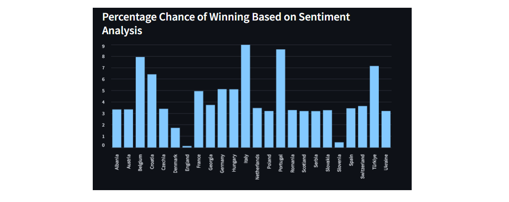
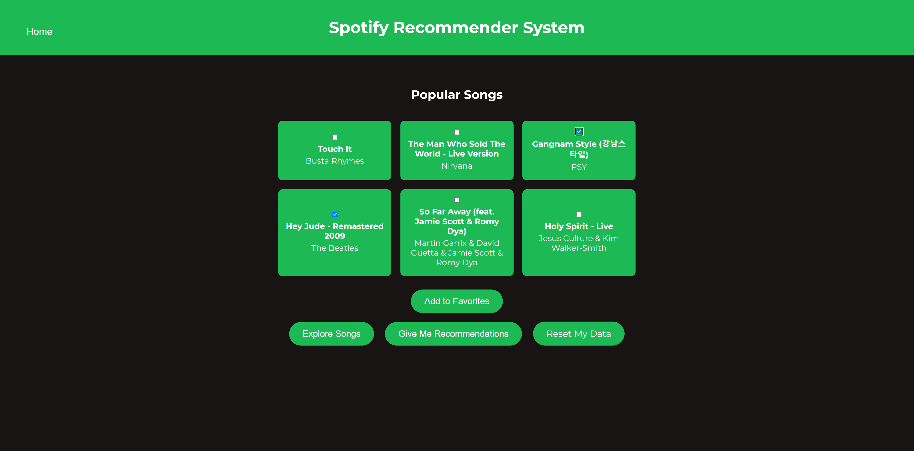
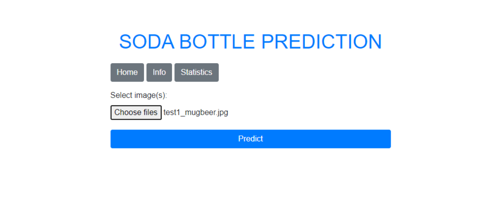
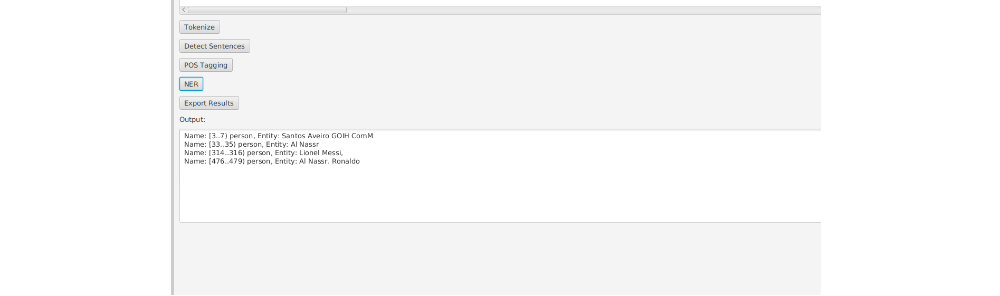
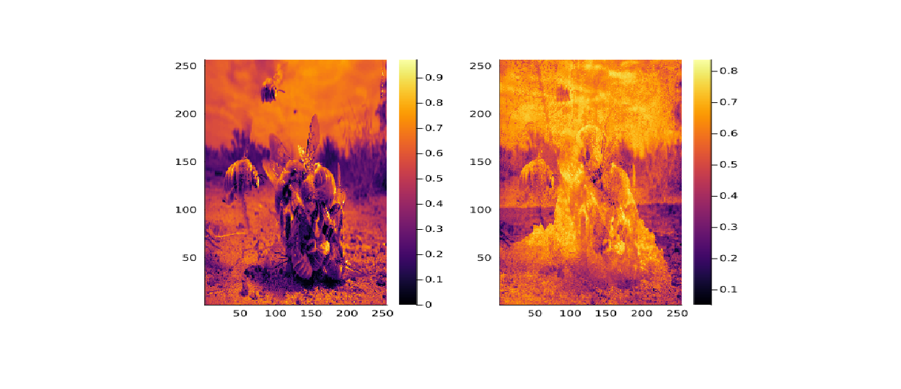
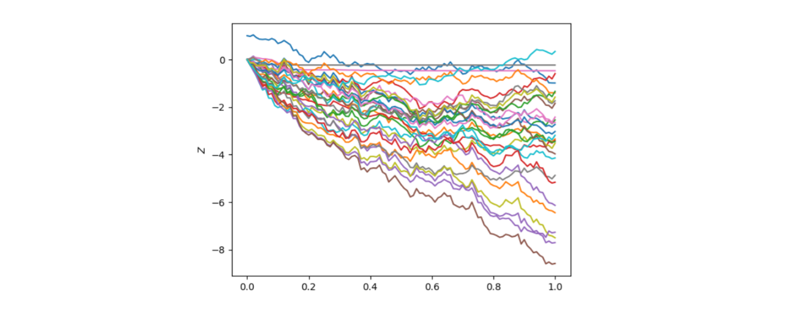
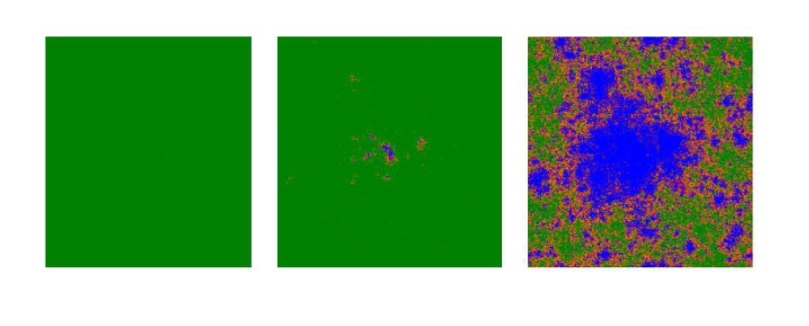

Commercial
Turn ambiguity into a viable AI engagement.
Market discovery, solution shaping, proposals, pitching, contracting, and client leadership.
Forward Deployed AI Engineer
AI Solutions · Technical Sales · Engineering
I take enterprise AI from the first client conversation to a working production system, combining commercial ownership, solution architecture, and hands-on engineering.
01 / Profile
My work sits where client problems, business cases, and production systems meet. I am most useful when the path is still ambiguous and someone needs to shape the opportunity, earn trust, and then build what was promised.
Commercial
Market discovery, solution shaping, proposals, pitching, contracting, and client leadership.
Technical
Generative AI, RAG, machine learning, Python, MLOps, and production software engineering.
International
Croatian native, English C2, German C1, with working proficiency in French and Italian.
Outside the work
I read widely, learn languages, run long distances, and keep trying to improve at tennis. Piano and guitar are slower projects, but still active ones.
02 / Publications
xAAD connects analyst feedback with anomaly explanations, using each to make the other more useful.

IEEE Access · 2024
Introduced a feedback-aware explainability method for active anomaly discovery. xAAD uses analyst input to refine both feature-level explanations and subsequent anomaly ranking, improving accuracy by 47% across seven benchmarks.
Read the paper
MIPRO Conference · 2025
Extended xAAD into a security operations setting and evaluated how feedback-driven explanations support analysts working with noisy network data. The study focuses on practical ranking quality, false-positive reduction, and analyst decision support.
View the publication03 / Engineering projects
End-to-end builds across computer vision, graph learning, NLP, recommendation, and scientific computing. Every card opens the source repository.

Graph ML · Fintech
Modeled Elliptic Bitcoin transactions as a graph and trained a two-layer GCN to flag illicit activity. Wrote the data pipeline in C++, then handled graph construction, training, and diagnostics with PyTorch Geometric and Plotly.

NLP · Data product
Built an automated pipeline that collected coverage from five European football publications, mapped articles to national teams, scored sentiment with Transformers, and turned the signals into tournament probabilities in a Streamlit dashboard.

Computer Vision · Healthcare
Built a similarity-first classifier for lung X-rays. ResNet50 converts each scan into an embedding, Annoy retrieves nearby cases, and a Streamlit interface lets users tune the neighborhood size and inspect evidence across four diagnostic classes.

Recommendation · MLOps
Designed a recommender where favorites and interaction history shape rankings through cosine and RBF similarity. Flask serves the product, Redis caches state and recommendations, Prometheus monitors it, and Docker Compose packages the stack.

Computer Vision · API
Compared convolutional architectures and fine-tuned Xception on the Cola Bottle Identification Dataset, reaching 94% accuracy. Wrapped the chosen model in a FastAPI upload-and-predict interface for direct testing.

NLP · Desktop
Turned Apache OpenNLP into an approachable JavaFX desktop tool for tokenization, sentence detection, part-of-speech tagging, and named-entity recognition, with exportable results and cross-platform launch scripts.

Representation Learning · Julia
Implemented an image autoencoder in Julia that learns compact latent representations, reconstructs images, and processes entire folders in batches. The repository pairs the training code with side-by-side reconstruction examples.
04 / Academic research
Two theses at TUM and LMU, spanning neural differential equations, randomized representations, and stochastic epidemic simulation.

M.Sc. Thesis · TU Munich
Improved and implemented a method for learning rough paths through reservoir computing, controlled differential equations, and randomized dimensionality reduction. The work preserves the expressive structure of path signatures while reducing their computational cost.
Explore the thesis and code
B.Sc. Thesis · LMU Munich
Designed a C++ model that extends classical compartmental epidemiology with spatial relationships and stochastic transmission. Simulated controlled, high-risk, and unchecked outbreaks to study how intervention assumptions change epidemic dynamics.
Explore the thesis and code